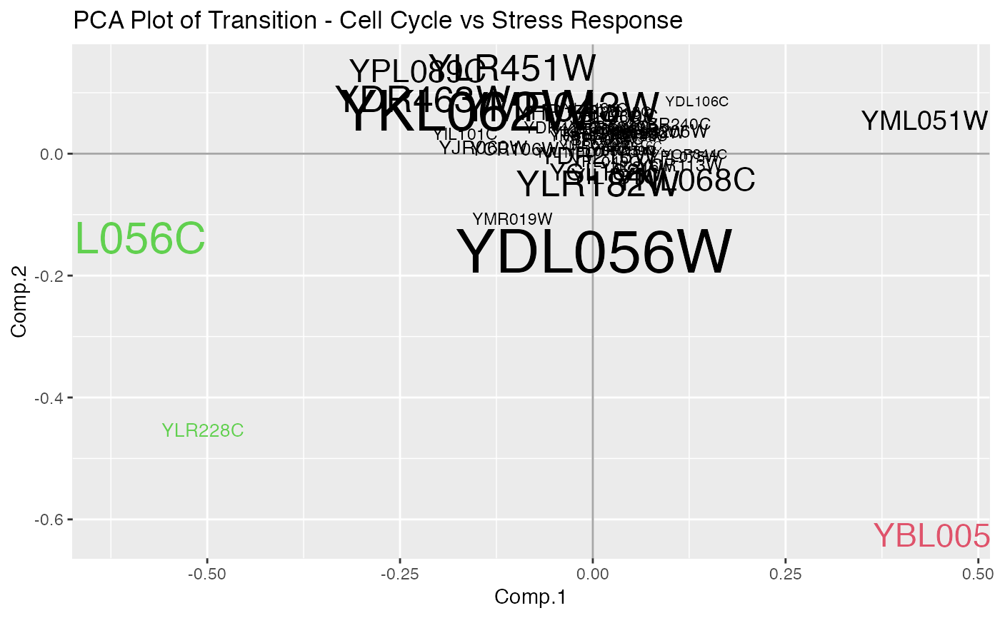

monster.transitionPCAPlot.RdThis function plots the first two principal components for a transaction matrix
monster.transitionPCAPlot( monsterObj, title = "PCA Plot of Transition", clusters = 1, alpha = 1 )
| monsterObj | a monsterAnalysis object resulting from a monster analysis |
|---|---|
| title | The title of the plot |
| clusters | A vector indicating the number of clusters to compute |
| alpha | A vector indicating the level of transparency to be plotted |
ggplot2 object for transition matrix PCA
# data(yeast) # design <- c(rep(0,20),rep(NA,10),rep(1,20)) # monsterRes <- monster(yeast$exp.cc, design, yeast$motif, nullPerms=100, numMaxCores=4)#' data(monsterRes) # Color the nodes according to cluster membership clusters <- kmeans(slot(monsterRes, 'tm'),3)$cluster monster.transitionPCAPlot(monsterRes, title="PCA Plot of Transition - Cell Cycle vs Stress Response", clusters=clusters)